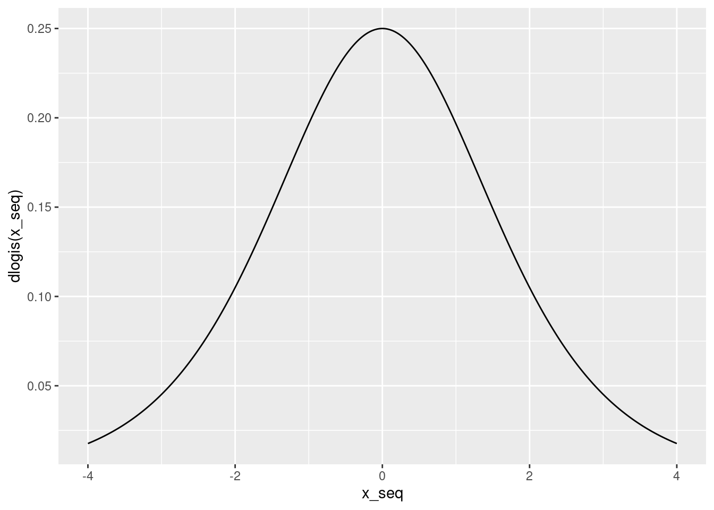

Lesson 1 How to Outsmart a Nobel Laureate
1.1 The Hot Hand
Amos [Tversky] and his students Tom Gilovich and Robert Vallone caused a stir with their study of misperceptions of randomness in basketball. The "fact" that players occasionally acquire a hot hand is generally accepted by players, coaches, and fans. The inference is irresistible: a player sinks three or four baskets in a row and you cannot help forming the causal judgment that this player is now hot, with a temporarily increased propensity to score. Players on both teams adapt to this judgment—teammates are more likely to pass to the hot scorer and the defense is more likely to doubleteam. Analysis of thousands of sequences of shots led to a disappointing conclusion: there is no such thing as a hot hand in professional basketball, either in shooting from the field or scoring from the foul line. Of course, some players are more accurate than others, but the sequence of successes and missed shots satisfies all tests of randomness. The hot hand is entirely in the eye of the beholders, who are consistently too quick to perceive order and causality in randomness. The hot hand is a massive and widespread cognitive illusion.
- Explain idea behind hot hand: more likely to make a basket if you've just made one.
- Sport fans and commentators long claimed this existed; Kahneman et al said it's an illusion; lots of papers on this; add some quotes
- In this case the academics turned out to be wrong: Miller & Sanjurjo (2018) showed that the statistical methods researchers had used to study the hot hand were flawed.
- Biased against finding evidence of a hot hand even if it exists. Turns out that there is a hot hand phenonmenon.
- Here's what I find interesting about this.
- Viewed from one perspective, this is a very subtle error: the probabilistic intuition behind it is relatively complicated, M&S even wrote a simpler follow-up paper to try to get the intuition across. Subtle enough to be missed by Nobel laureates!
- On the other hand, this is a boneheaded error: anyone with a rudimentary knowledge of programming could have coded up a simulation in under an hour to reveal the problem. No one bothered until M&S.
- The moral: simulation is a superpower. It's not a replacement for theory, but a potent complement. If you find a pattern you don't understand in a simulation, this can spur you to try to understand the mathematics behind it.
- Swiss Army Knife metaphor: simulation is like the knife, arguably the most important tool in the box, weapon in the arsenal.
- Today you'll carry out a simulation establishing the bias of methods previously used to look for a hot hand.
- Along the way, you'll learn some helpful tools for simulation more broadly and a useful pattern for keeping your simulation code organized.
- Maybe even a touch of parallel computing!
- Some basic simulation commands in R:
sample(),rbinom(),rnorm(), etc. Read the help files. - Write a function
draw_sim_data()that makes 100 Bernoulli(1/2) draws. Optional argumentspandn? This simulates data when there is no hot hand set.seed()what does it do?- Think about how to calculate the estimator: fraction of times that three ones are followed by another one compared to another zero. Suppose you had a function
is_after_3_ones()that took a vector of 0 and 1 and returned, for each element, whether it is after three ones. How would you use it? Write this function. - Put everything together with
replicate()to do a simple sim for \(p=1/2\) and \(n = 100\). - How about trying different values of \(n\) and \(p\)? Need to keep results organized:
apply()family of functions (or maybe the tidy equivalents?) - Try doing it in parallel with
mclapply(). First explain the basic idea of parallel and why this is "embarrassingly parallel." Show them how to time the code, illustrate withsys.sleep(). - For the students who finish very quickly, have some extensions: a markov chain DGP, and
is_after_k_ones()
dgp <- function(n = 100, p = 0.5) {
rbinom(n, 1, p)
}
# Maybe have a challenge to write the version for after k ones, but start by
# asking them to do the one for after 3 ones
is_after_k_ones <- function(x, k) {
out <- rep(NA)
for(i in (k+1):length(x)) {
out[i] <- sum(x[(i - k):(i - 1)]) == k
}
return(out)
}
get_est <- function(x) {
#ones <- which(x == 1)
#mean(x[ones + 1], na.rm = TRUE)
mean(x[is_after_k_ones(x, 3)], na.rm = TRUE)
}
n_reps <- 1e5
set.seed(1234)
sim_results <- replicate(n_reps, get_est(dgp()))
library(ggplot2)
qplot(sim_results)## `stat_bin()` using `bins = 30`. Pick better value with `binwidth`.## Warning: Removed 30 rows containing non-finite values (stat_bin).
mean(sim_results, na.rm = TRUE)## [1] 0.4602045#ones <- which(x == 1)
#x[which(x == 1) + 1]
#runs <- rle(x)
#foo <- rle(x)
#str(foo)
#x
#foo$lengths
#foo$values